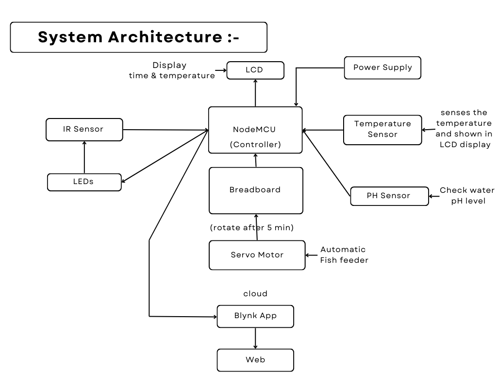
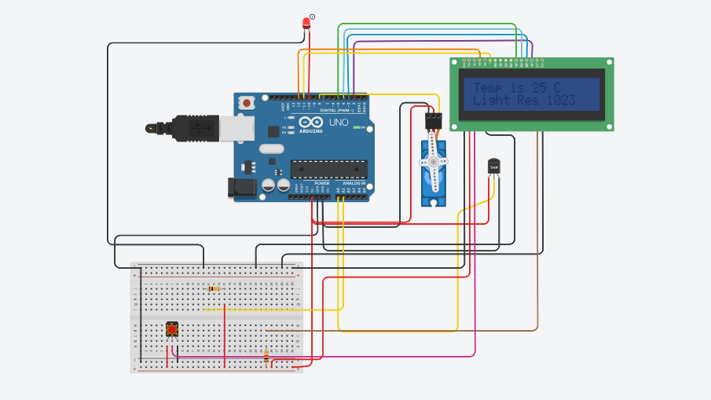

About
The IoT-based smart aquarium is an advanced automated system designed to manage aquatic environments with minimal human intervention. Key features include a precision-controlled mechanical feeding mechanism and real-time monitoring of critical parameters such as feed levels, water temperature, pH, and water levels. These parameters are accessible remotely via a web interface or a mobile application, providing users with convenient access and control. The system utilizes the NodeMCU platform for IoT integration, ensuring reliable communication and data transmission over the internet. This setup significantly reduces manual labor and the likelihood of human error in maintaining an aquarium environment suitable for aquatic life.
Objectives:
- Automate water quality monitoring
- Regulate temperature and lighting
- Automate feeding schedules
- Provide real
- time alerts and updates
- Ensure a healthy environment for aquatic life
- Reduce manual maintenance effort
- Improve energy efficiency
- Enhance the overall aquarium experience
Hardware Components:
- Servo Motor
- IR Proximity Sensor
- PH Sensor
- Temperature Sensor
- LCDs(16*2)
- Resistor
- Breadboard
- Jumper Wires
- Node MCU
System Architecture:
Schematic Diagram:
- Water Quality Monitoring (pH, ammonia, nitrite, nitrate)
- Temperature Control
- LED Lighting with Customizable Spectra and Schedules
- Fish Feeding Automation
- Mobile App Monitoring and Control
Code:
#include <Servo.h>
#include <LiquidCrystal.h>
Servo myservo;
int count = 0;
int pos = 0;
double angle;
String printer;
LiquidCrystal lcd(12, 11, 5, 4, 3, 2);
// Temperature Values
int baselineTemp = 0;
int celsius = 0;
int fahrenheit = 0;
int sensorPin = A1;
int sensorValue = 0;
void setup() {
pinMode(A0, INPUT);
Serial.begin(9600);
myservo.attach(8);
lcd.begin(16, 2);
pinMode(13, OUTPUT);
pinMode(10, OUTPUT);
}
void loop() {
// Set threshold temperature to activate LEDs
baselineTemp = 40;
// Measure temperature in Celsius
celsius = map(((analogRead(A0) - 20) * 3.04), 0, 1023, -40, 125);
// Convert to Fahrenheit
fahrenheit = ((celsius * 9) / 5 + 32);
Serial.print(celsius);
Serial.print(" C, ");
Serial.print(fahrenheit);
Serial.println(" F");
if (celsius > baselineTemp) {
digitalWrite(13, HIGH);
} else {
digitalWrite(13, LOW);
}
// Servo Motor
if(count % 10 == 0) {
for (pos = 0; pos <= 180; pos +=1) {
myservo.write(pos);
delay(15);
}
for (pos = 180; pos >= 0; pos -= 1) {
myservo.write(pos);
delay(15);
}
}
sensorValue = analogRead(sensorPin); // Read the value from the sensor
Serial.print("IR Value is ");
Serial.println(sensorValue); // Prints the values coming from the sensor on the screen
if (sensorValue > 90) {
// LED
digitalWrite(10, HIGH);
} else {
digitalWrite(10, LOW);
}
lcd.setCursor(0, 0);
printer = "Temp is " + String(celsius) + " C";
lcd.print(printer);
lcd.setCursor(0, 1);
printer = "Light Res " + String(sensorValue);
lcd.print(printer);
count = count + 1;
delay(1000); // Wait for 1000 milliseconds
}